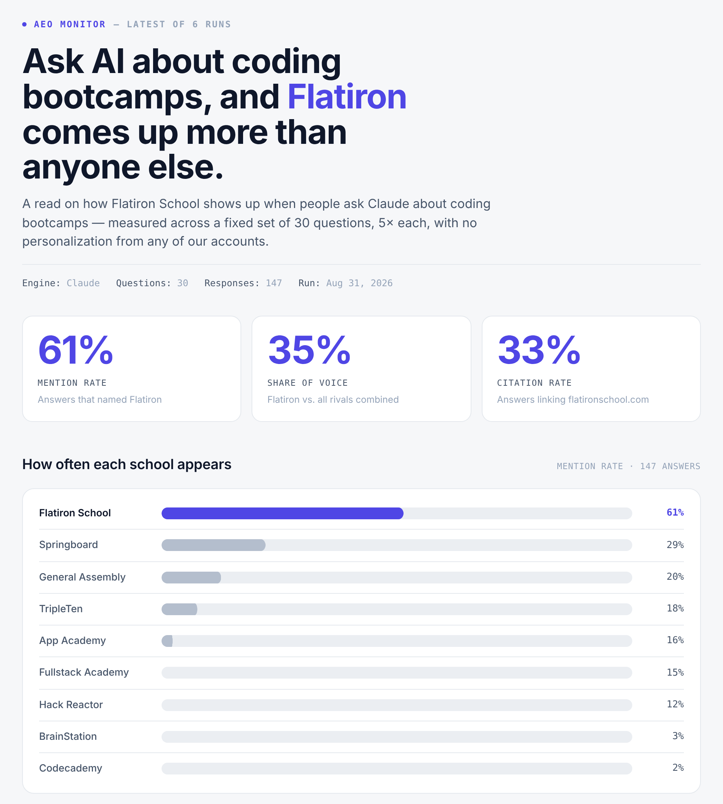

A brand monitor said one bootcamp appeared in 61% of AI answers about its category. This measures how much of that number was the monitor.
Share of answers naming a given brand, by prompt type. Every brand checked against every answer, pooled across all ten brands.
When a prompt names a brand, the answer names that brand. In this study it happened in every case. The further a question gets from naming anyone, the less often any brand appears at all.
| Prompt type | Rate | Brand-answer pairs | 95% interval |
|---|---|---|---|
| Names the brand "Hack Reactor vs App Academy?" | 100.0% | 54 of 54 | 93.4% to 100.0% |
| Commercial "Best bootcamp for a career changer?" | 32.9% | 355 of 1,080 | 30.1% to 35.7% |
| Transactional "How do I pay for a bootcamp?" | 14.4% | 39 of 270 | 10.7% to 19.1% |
| Informational "Are bootcamps still worth it in 2026?" | 2.6% | 28 of 1,080 | 1.8% to 3.7% |
Commercial questions get answered with a list of schools: almost every commercial answer names at least one of the ten brands. Informational questions get answered with an essay: most informational answers name no bootcamp at all. Asking whether bootcamps are worth it does not make the engine recommend anyone, so nobody is visible.
So a visibility score is roughly the share of prompts that name the brand, times 100%, plus the share that don't, times the brand's actual rate on open questions. The first term is set by whoever wrote the prompt list. Only the second term is the brand.

This study exists because of that dashboard. It was a weekly monitor built for one bootcamp's marketing team, and it reported that the brand appeared in 61% of AI answers about its category. Twelve of its thirty prompts named the brand. Across six weekly runs, every one of the 482 answers to those prompts named it. On the other eighteen prompts, the same engine in the same week named it in 37% of answers. Of the 61 points on the dashboard, 39 came from the prompt list.
| Monitor, final weekly run | Prompts | Answers | Brand named |
|---|---|---|---|
| Prompts naming the brand | 12 | 57 | 57 (100%) |
| Prompts that don't | 18 | 90 | 33 (37%) |
| As reported | 30 | 147 | 90 (61%) |
The monitor's 37% and this study's figure for the same brand are not the same measurement: one engine in August on prompts written to watch one brand, against three engines in October on prompts written to survey a category. Both sit a long way below 61.
Mention rate across every prompt, with its 95% confidence interval.
| Question type | Answers | Most mentioned |
|---|---|---|
| commercial | 108 | Springboard 70%, General Assembly 46%, Nucamp 44% |
| comparative | 27 | Flatiron School 67%, Springboard 37%, App Academy 33% |
| informational | 108 | App Academy 8%, Springboard 5%, Hack Reactor 4% |
| transactional | 27 | Hack Reactor 41%, App Academy 30%, Flatiron School 26% |
These are the sources the engines' search step returned, not the sources the answers drew on. Perplexity and Claude return everything their search retrieved: one answer here retrieves a Nucamp page and then talks entirely about a different school. Read this as what the engines looked at, not what persuaded them.
| Domain | Retrieved | Type |
|---|---|---|
| coursereport.com | 120 | Review sites and directories |
| hakia.com | 113 | Review sites and directories |
| nucamp.co | 101 | Brands' own websites |
| metana.io | 82 | Other vendors' content |
| tripleten.com | 74 | Brands' own websites |
| scrimba.com | 70 | Other vendors' content |
| careerkarma.com | 60 | Review sites and directories |
| forbes.com | 57 | News and editorial |
| cirr.org | 47 | Industry standards body |
| rockstardeveloperuniversity.com | 45 | Other vendors' content |
| assignmentdude.com | 40 | Paid essay services |
| springboard.com | 39 | Brands' own websites |
| bestcolleges.com | 36 | Review sites and directories |
| computerscience.org | 32 | News and editorial |
| en.wikipedia.org | 32 | News and editorial |
Findings that looked publishable for a day or two and weren't.
Gemini is left out of every figure above. Its answers stay in the database and are summarised here.
| Answers | 90 |
| Answers that cited nothing | 67 |
| Average citations per answer | 0.26 |